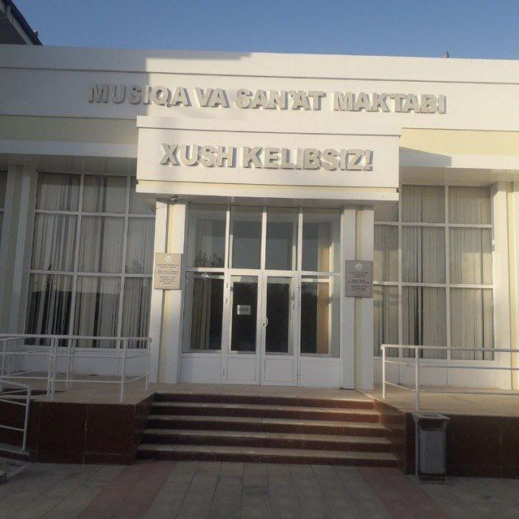

Mirzacho'l tumani 13-son "Bolalar musiqa va san'at maktabi"ning aloqa bo'limi

Aloqa
Mirzacho'l tumani 13-son "Bolalar musiqa va san'at maktabi"ning Telefon nomiri: 72-312-24-24
Manzil
Jizzax viloyati Mirzacho'l tumani Mustaqillik mahallasi O'zbekiston ko'chasi 29 uy